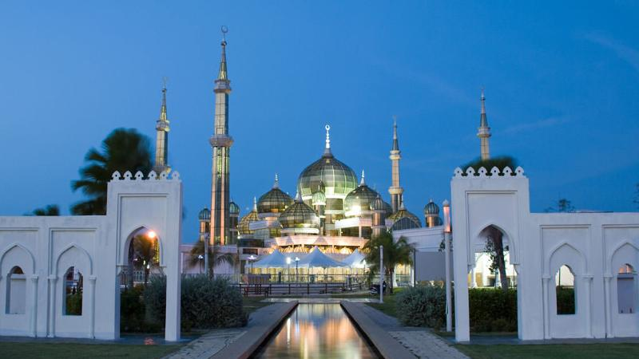
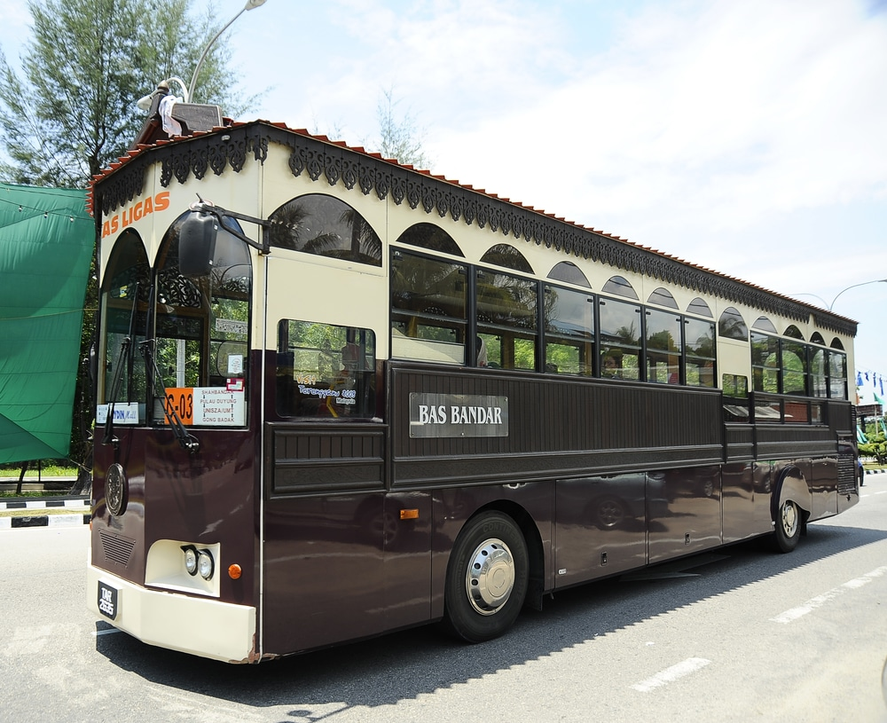
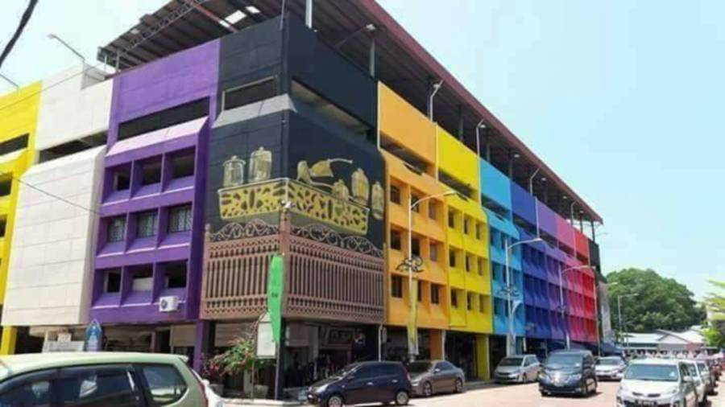

<!DOCTYPE html>
<html>
<head>
	<title>What's New</title>
	<link rel= "stylesheet" href="style.css">
</head>

<html>
<head>
<style> 
body {
  background-image: url("sea.jpg");
  background-color: #cccccc;
  
}

</style>
</head>
<body>
</html>

<center><h1>Best Things To Do In Kuala Terengganu </center></h1>

<p>Kuala Terengganu is the capital of the great state of Terengganu in Malaysia. The state lies along the coast of the South China Sea and stretches for almost 13,000 square kilometers. Located inside the state of Terengganu you will find beautiful little villages and towns, as well as idyllic islands and of course the star attraction which is the capital of Kuala Terengganu itself.
<br>
<hr>
<p>One of the great draws about a visit to Kuala Terengganu is that is offers such diversity. As well as strips of sandy beach, you will also find a mix of Chinese and Malay culture here thanks to the sizeable local Chinese community. As part of a trip here you can walk around the town and visit pretty heritage buildings and museums, or you spend time mussel picking and squid fishing.
<br>
<hr>
<center>
<p>Whatever you choose to do, you will be spoiled for choice when it comes to the food, which mixes Peranakan cuisine with typical Malay dishes and plenty of fresh seafood.
<br>
<hr>
	
<center>
<center><h1>Visit The Crystal Mosque</h1></center>
<p>The Crystal Mosque or Masjid Kristal is a mosque in Wan Man, Terengganu, Malaysia. A grand structure made of steel, glass and crystal, the mosque is located at the Islamic Heritage Park on the island of Wan Man.<p>

<center> </center>
<hr>

<body>
<center><h1>Take a Trip In Pulau Redang</h1></center>

<p>If you want to get out of Kuala Terengganu proper then head to Redang Island or Pulau Redang as it is known in Malay. <center>
<br>
<hr>
<p>The island is part of the wider Redang Island Marine Park and this part of Malaysia is known for having a range of underwater delights.These include some 500 different kinds of coral and over 3,000 species of fish. 
<br>
<hr>
<p>You will also find over a thousand kinds of bivalves here and as you would expect, snorkeling and diving are popular pastimes here.
This makes a great day trip outside of Kuala Terengganu or you can stay overnight here the serenity of the island.
</center>
<br>

<center> </center>
<br>
<hr>

<body>
<center><h1>Ride On Cas Ligas</h1></center>
<br>
<hr>
<p>One of the quirkiest sights you will see in Kuala Terengganu is the Cas Ligas Bus.<center>
<br>
<hr>
<p>This will take you on a heritage tour of the city but the most amazing thing about it is that it is designed in the model of a traditional house in Kuala Terengganu.<center>
<br>
<hr>
<p>The bus really has to be seen to be believed and this is a good way to see the highlights of the city while also enjoying this unique experience.
<p>

<center> </center>
<hr>

<body>
<center><h1>Browse At The Central Market</h1></center>


<p>If you want to get a look at some of the lush local produce in Terengganu then head to the Central Market which is filled with exotic ingredients.
<center>


<center> </center>


<hr><center>
<a href="index.html" "title="click this button to My Homepage">My Homepage</a>
<a href="about.html" "title="click this button to About">Attraction</a>
<a href="gallery.html" "title="click this button to Best Place to Stay">Best Place to Stay</a>
<a href="food.html" "title="click this button to Foodie">Foodie</a>
<a href="best.html" "title="click this button to The Best Spot">The Best Spot</a>
<a href="contact me.html" "title="click this button to Contact Me">Contact Me</a>

</body>
</html>